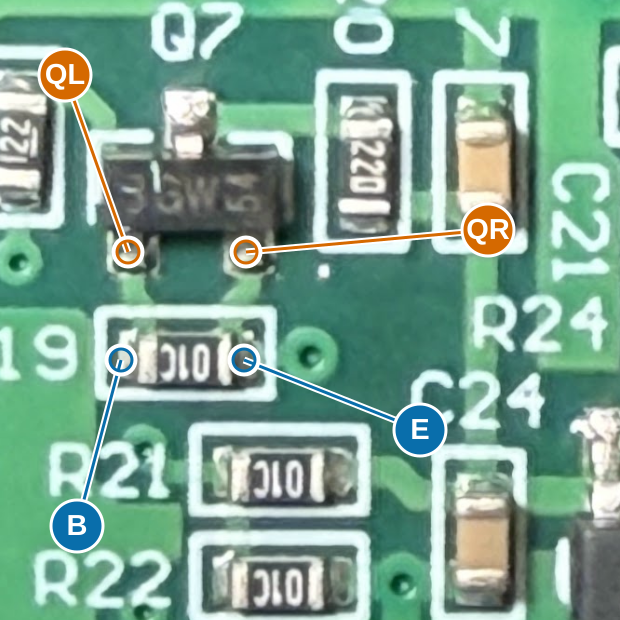

DISCONNECT BATTERY AND PROGRAMMER. Allow supply capacitors to discharge; confirm power is off before selecting resistance (ohms). Leave Q7 fitted. These tests are between the marked contacts, not to GND.
B65: red QL (Q7 lower-left contact), black B (R19 left end). B66: red QR (Q7 lower-right contact), black E (R19 right end). Report ohms, kohms or OL; say changing if unsettled.
Verify the two disputed R19-to-Q7 joins

QL: Q7 LOWER-LEFT metal contact of the two-contact side. Red probe for B65; physical Q7.L. The single upper contact is not used.
QR: Q7 LOWER-RIGHT metal contact of the two-contact side. Red probe for B66; physical Q7.R.
B: R19 LEFT metal end: the point that read 0 V. Black probe for B65.
E: R19 RIGHT metal end: the point that read 4.5 V. Black probe for B66.
ID
Red probe
Black probe
Condition
Reading
B65
QL
B
Unpowered
B66
QR
E
Unpowered
R19 left=0 V and right=4.5 V do not support the simple Q7-held-off explanation. The earlier local joins were photo/circuit inferences. Near shorted-probe resistance supports each copper join; a resistor-sized reading or OL does not. Do not conclude a bad Q7 or change its pinout from these voltage readings alone.
Copy results
Worksheet only; nothing is sent automatically. Copy before closing.
What follows
Resolve hidden paths and device behavior - S1 contacts and the front capacitor-bank ANT2 connection are established. Q3 stays fitted with identification deferred. Two local-only PIC branches, candidate device roles and powered behavior remain.
Recover critical component values - 44 ceramic values; prioritize tuning and receiver after topology.
Finish interface and package mapping - LED colour branches and J5 board-contact/output mapping are established. LED footprint, connector fit and external motor harness orientation remain reproduction qualifications.
ERC: 1 retained U6/U6A output conflict. U6A is DNP; its regulator symbol remains by your request. Other source and library findings are resolved.